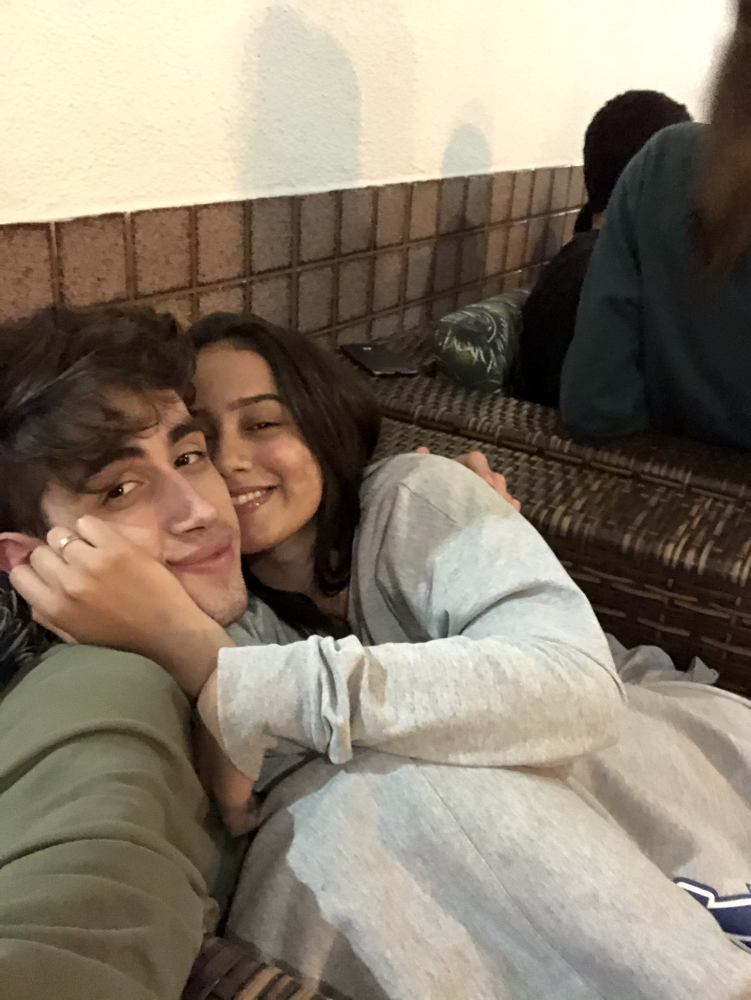
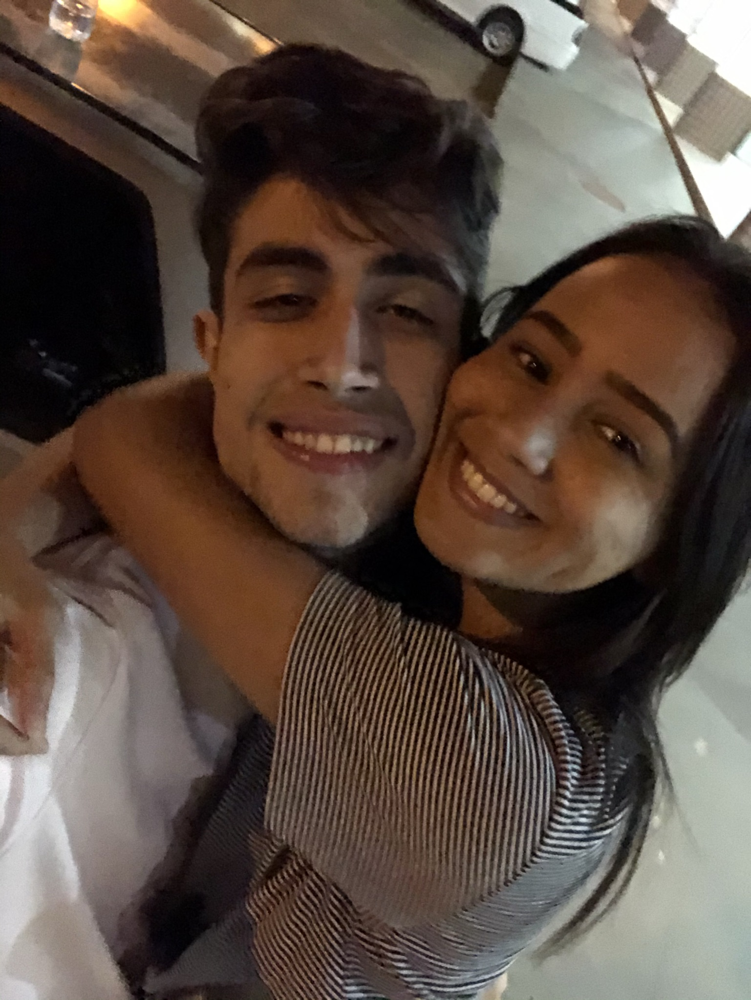
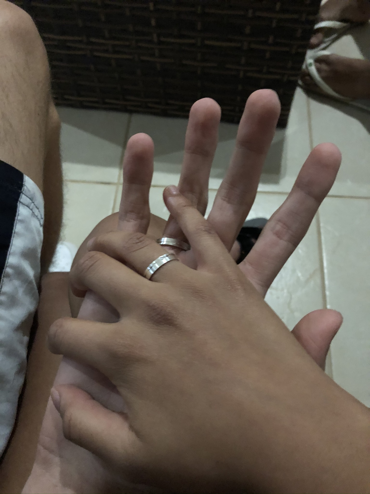
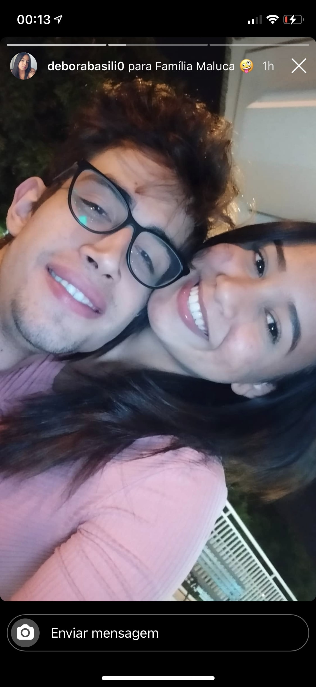
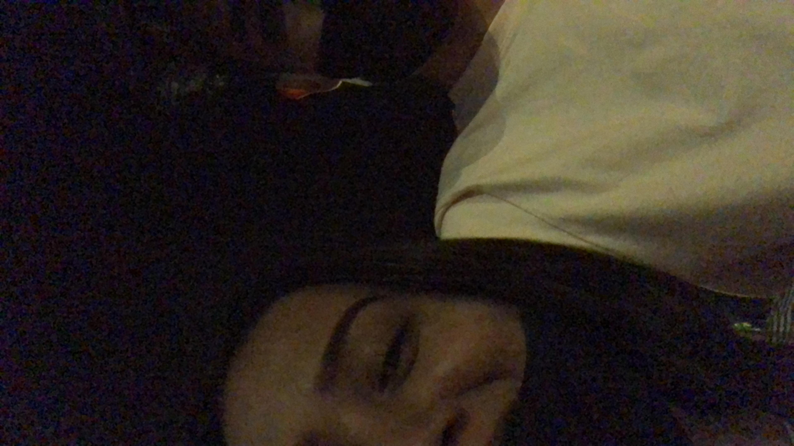

Carta de amor
Esta é uma carta de amor, abaixo você encontrará um relato do começo de uma história, talvez a mais importante da minha vida!
Primeira conversa
"A sua cor é rosa e verde", essa foi a frase que deu início a uma conversa quase que infinita. Segundo ela, essa imagem foi compartilhada como uma tentativa de me fazer responder e,
cada cor representava uma característica, ou algo que faz parte de uma personalidade. Toda vez que faço essa retrospectiva na minha cabeça, eu penso em como uma pessoa se esforça
pra começar um relacionamento com alguém e passar uma imagem decente, e ao mesmo tempo que reconheço esse esforço, eu me questiono a necessidade de construir, por exemplo, tal frase:
"E esse projeto de carro elétrico, se incluir transportes públicos, será uma revolução automobilística", observe: eu não estava interessado nesse assunto, nós começamos nossa conversa
falando sobre trabalho, e eu, idealista do jeito que sou, queria conversar sobre sonhos, objetivos, perspectivas, crenças e filosofia.
Mas a motivação era certa, o motivo, a causa... não demorou muito pra que eu identificasse pensamentos, sonhos e vontades semelhantes, conversamos sobre tanta coisa... trabalho,
sobre a fascinação por crianças, e sobre a vontade de dar aula, opiniões sobre a vida, questionamentos, família, propósitos, tudo! Nesses primeiros dias de conversa já era claro
que tinhamos muita coisa em comum, e ao mesmo tempo coisas muito diferentes, experiências, vivências, religião e talvez algumas metas. Mas o quão chato deve ser conversar com alguém
que concorda com você sempre? ou que discorda de você sempre? Então... acredito sim que as pessoas se atraem pela aversão delas mesmas, eu procuro em alguém, algo que eu não tenho.
Ela um dia me perguntou qual era minha intenção, e eu disse que todo ser humano tem uma necessidade pra suprir, seja necessidade profissional, de amizade ou de afeto.
Primeira vista
Um dia antes da primeira conversa: eu estava jogado ao relento, num deck, cercado de água e quase me afogando nas minhas angústias! Triste, estava com amigos mas estava triste,
o ano foi tomado pelo corona vírus e eu não respeitava as regras, minhas esperanças estavam quase que esgotadas, diante de tudo, não me via conhecendo uma pessoa assim tão cedo.
Era tarde, amiga de um amigo, e a ideia de buscá-la em outra cidade era dele. Eu, tão pessimista e desesperançoso pensei: "Já ta tarde e ele está querendo fazer todo esse trabalho",
mas não frustrei ninguém, e se tivesse impedido, eu quem seria a pessoa mais frustrada do mundo... que imprevisível!!!
E o que talvez pudesse ser uma oportunidade única pro meu amigo,
acabou sendo só mais uma decepção, tadinho! Ele queria tanto beija-la.
Detalhe, alguns detalhes, por pouco tudo seria diferente, um segundo é tempo suficiente pra mudar tudo, pra sempre! Depois desse dia nunca mais parei de conversar com ela, e hoje,
no dia em que escrevo esse texto, eu relembro algumas conversas que tivemos, e tento me dedicar desde o primeiro minuto de conversa, até o dia de hoje e, mesmo com todas as falhas
que cometi e as coisas que deixei de falar, eu tentei sempre ser o melhor que pude, e acredito que ao longo da vida todo mundo, eventualmente encontra seu amor.

A intenção é algo mais pra se sentir, a confusão só serve pra organizar você, veja por tudo que tu viu partir, valeu a pena o que tu viu chegar.
Sentimento
Eu sempre tive uma dívida com Deus, em todas as circunstâncias onde me vi alcançando o limite de frustrações, Ele me salvou, na minha vida profissional,
onde não estava mais satisfeito com minha evolução, e na minha vida pessoal, onde enxergava a falta de alguma coisa, no fundo eu sabia o que era mas não queria assumir,
achei que fosse controlável e dispensável... a falta de afeto! Nunca foi e nunca será suprida apenas por familiares e amigos, é um vazio que só foi preenchido,
pelo menos no meu caso, por uma pessoa singular. Sinto muito que discorde, a verdade pra mim é essa, ninguém vive sozinho e ninguém constrói algo sozinho, as pessoas precisam
das outras, e eu preciso dela!
Como começar a segunda parte dessa carta? eu desejaria que fosse impactante pra todos que lessem mas, como expressar e expor com toda a força e efeito,
essa energia que sinto? Como que eu, mesmo demonstrando toda essa fraqueza, seria capaz de fazer você entender o poder que sinto do lado dela? As vezes até ela questiona...
pois é compreensível que ela deseje que eu a ame pelo menos na mesma intensidade que ela ama e, talvez com a existência dessa carta, ela consiga entender pelo menos esses 10%
de amor e dedicação que estão relatados aqui, por meio dessas palavras... Porque sinceramente, mesmo com tudo que tenho pra falar, reconheço a incapacidade de uma linguagem,
de representar 100% o sentimento que sinto aqui dentro!
O amor é uma coisa que podemos sentir, e você ama aquilo que pode perder. existem coisas fora do nosso controle, eu tenho uma opinião sobre ciúmes: quem não tem, não ama!
O ciúmes nada mais é do que a extrema vontade de ter ela o tempo todo só pra MIM!! Eu ia colocar "você" no lugar do "mim" mas pareceria que fosse pra você mas não, ela é
minha! O ciúmes é uma forma de proteção mas também pode ser sim uma insegurança, dos outros, pois você nunca desconfiaria de quem ama e sim de quem não conhece...
essa desconfiança de tudo e de todos é o que me consome no momento, e já faz muito tempo, talvez nunca irei me eximir dessa merda, eu sinto meu sangue pulsar e eu li que a
causa disso pode ser a paixão, sim... acho que da sim pra amar e ser apaixonado pela mesma pessoa ao mesmo tempo!!! Sou submisso ao seu feitiço, a paixão é intensa e te faz
suar, te faz afetado por qualquer coisa que ela disser, e o nervoso que se sente no começo, é substituído pelo pressão de todo dia querer ser o melhor que se pode ser.
Ela é aquilo que eu queria, que conseguia visualizar na minha mente, e que agora sinto no meu coração!
Há um mínimo de dignidade e respeito que um homem não pode negociar... e pra não se incomodar com comportamentos alheios você precisa ter um coração inabalável,
é impossível! Por esse motivo quase sempre, você reagirá com desconfiança(dos outros), já falou 'Eu te amo' pra alguém? Isso é anunciar a entrega de você mesmo,
por inteiro... você se desarma, fica vulnerável, e tudo isso que eu estou falando nesse parágrafo, é um desafio diário na vida de todos que se relacionam com alguém,
porque pelo menos no ambiente que me encontro hoje, as pessoas infelizmente se perdem, ninguém liga pra ninguém, ninguém respeita ninguém... Se um time levanta a taça(eu)
é choro da torcida rival(outros). E pra todos que tentam me atrapalhar, e que imploram à divindade pra que isso acabe o mais rápido possível, uma frase: Eu penso em tudo,
eu pego e peso tudo, mas me mantenho aqui! Toda convicção na minha vida pode ser perigosa, menos essa - O que nós temos não vai acabar. Esse infinito cabe a gente! A honra,
a glória e a dignidade agora é um bem escasso!
O meio está entre o principio e o fim como é normal e natural, é nesse meio que percorremos o caminho da nossa vida, é nesse espaço de tempo que construímos e vivemos
aquilo porque sonhamos. Ela voa sem asas, encara correnteza, o mundo é sua casa onde ela senta e põe o pé na mesa. Viajando o mundo e pensando em nós? Não. Pensando em
nós viajando o mundo!! E mesmo a vendo todo santo dia, enquanto não estou com ela, fico procurando motivos que justificam a tua falta... Eu não me considero nem razoável
pra ela, mas me dedico todo dia pra tentar ser mais que suficiente!

Eles querem saber qual o sentido da vida, eu quero saber qual sentido da avenida leva até você!
O segundo parágrafo talvez devesse não estar nesse texto
Alguém perguntou: Porque a divindade nos dá golpes tão fortes de realidade e parte nossos sonhos?
Alguém respondeu: Divindade não destrói sonhos. Somos nós que ficamos esperando, ao invés de fazer acontecer!
E eu estou aqui pra te falar, que poderá alcançar tudo o que você projetou pra sua vida, com mais facilidade e leveza, caso
encontre alguém pra te sustentar, pra te dar suporte e te inspirar. Hoje eu entendi, que eu não carregaria a energia e a disposição
suficiente pra alcançar tudo que eu quero, sozinho. Eu reformulei todos os meus sonhos, tudo que eu fiz foi incluir ela em todos e,
quando eu fiz isso, tudo que eu achava distante ficou mais perto, tudo que eu achava difícil ficou mais fácil, e tudo que eu achava incrível,
ficou melhor. Eu falo isso pra ela... Antes dela, o que eu almejava, na minha cabeça era bom e depois ficou melhor, mas agora se não
tiver ela... é ruim! É esquisito né? Como tudo se torna irrisório sem ela, e deslumbrante com ela! Faz sentido pra quem sente!
As vezes somos imaturos demais quando não devemos, alguns erros bobos machucam e nós não percebemos. O que a gente sente é tão forte que,
tudo fica mais sensível, a flor da pele, cada palavra e atitude afetam sempre, de formas diferentes, positivamente ou negativamente, sempre!
Eu já devo ter falado sobre isso em alguma linha desse texto, mas você ama aquilo que pode perder, sendo assim, a insegurança, o medo,
a paranóia são atributos indispensáveis da nossa relação, pelo menos por agora, talvez melhore, ou talvez seja necessário, uma forma de proteção.
Todas essas sensações nos fazem mal, nos fizeram mal por uma época! Eu to falando do medo de perdê-la, da insegurança, de não ser suficiente e
de não estar entregando o melhor de si. Mas o ciúmes é sinistro, ele supera qualquer outro tipo de incômodo, não confie nas pessoas!
A facilidade de confiar nas pessoas é também uma das fragilidades mais devastadoras que tem, eu vi muita gente traiçoeira durante a minha vida,
gente frustrada e gente que faria qualquer coisa pelos próprios interesses, eu já falei também sobre isso, né? Ninguém respeita ninguém por aqui!
E isso é tudo sobre a atmosfera que habitamos, estou falando dos ambientes que frequentamos, e sinceramente, enxergar o mundo do jeito que enxergo
talvez não seja culpa minha. Vi esposo trair esposa, e vejo constantemente o desrespeito das pessoas diante dos relacionamentos alheios, a miserável
necessidade de dar opinião sobre o que não conhece e a mediocridade de se revoltar pelas felicidades alheias!
Uma das regras básicas da vida é ter respeito pelas pessoas, ser educado e saber lidar com as adversidades do mundo, uma pessoa que falha em ter isso
em sua própria personalidade, falhou também miseravelmente, na vida como um todo! Observe: inconveniência também é falta de respeito general. Não queria
estar trazendo esse tipo de assunto pra esse texto, é pra ser mais uma carta do que um texto, uma carta de declaração, pelos bons sentimentos que sinto
por ela, com ela todos os meus sonhos são mais possíveis, lucros invisíveis são melhores, sozinhos somos fortes, juntos imbativeis! Feita essa consideração,
voltarei pro que nos interessa, sentimento!
Se eu te enrolar, me empurra
Se eu te entregar, aceita
Se eu recusar, me surra
Se eu sussurrar, escuta
Se eu gaguejar, me entende
Se eu for só teu, me tenha
Se eu merecer, me bate
Se eu me mostrar, me veja
Se tu tá bem, eu tô
Se tu não tá, também
Se eu te amar, me sente
Se for brigar, pra quê?
Se eu chorar, me anima
Mas se eu sorrir, é por você!

O que me interessa é o momento e o agora!
Passado
Estar só por um momento, é necessário, todo mundo precisa desse momento, pra espairecer e colocar as coisas no lugar,
pra organizar o próprio caos dentro de si. Eu espalhei essa frase por muito tempo mas estou reconsiderando ela, porque
estar sozinho não é totalmente sozinho, é estar longe das pessoas para estar perto da divindade, pois enquanto uns
se martirizam e se culpam o tempo todo pelas coisas que fizeram, outros buscam esse afastamento para estarem mais perto
de Deus. A fraqueza das atitudes do passado traz uma consciência inevitavelmente pesada quando se pensa na conduta,
nos próprios principios e nas melhores coisas que você projetou pra sua vida.
A sociedade é uma miséria e se você não tomar muito cuidado com ela, terá atitudes que não se orgulhará no futuro,
e isso tudo porque fraquejou diante do que acredita como uma vida próspera, num momento em que quis saciar um desejo,
mas que não te preenche no momento seguinte, e te esvazia mais ainda por dentro no outro dia. E esse acúmulo de erros
te faz sofrer, criar traumas durante sua vida, e se você não procurar essa redenção, vai continuar sofrendo!
Porque eu estou falando sobre isso nesse texto? Porque nossas atitudes do passado nos afetam hoje, nós
dois erramos lá atrás, nós dois fizemos coisas das quais não nos orgulhamos, e isso é o que acontece com todo mundo,
você que está lendo esse texto agora, também errou! Mas essa comoção não deverá ser usada como desculpa para errar.
Sobre eu e ela agora: eu tenho a chance mágica de usar as melhores palavras, os melhores exemplos e tocar o coração dela da melhor
forma, para que ela entenda que ELA é minha felicidade, e essa chance que eu tenho de ser o melhor que posso, faz
da minha vida, uma vida de desafios, colorida e feliz. E lamentarei demais quando esse momento acabar,
pois felicidade é um pequeno segundo da vida, que você gostaria de repetir, e que eu não
gostaria que acabasse, então eu uso a inteligência pra repetir. E eu espero do fundo do meu coração,
que enquanto eu estiver com ela, eu tenha a sensação de que a meta que eu vim buscar bater,
foi batida e alcançada.
E tomara, que quando eu estiver com ela, ela admita neste segundo, aqui, não depois, agora, que ela foi feliz,
e que o momento poderia ter durado um pouco mais. Porque não há nada mais prazeroso, do que proporcionar para alguém que ama,
um mísero segundo que esse alguém, gostaria de repetir com você. E eu não quero esperar até sexta ás 18h pra ser feliz!
É bem melhor quando a felicidade começa antes, e ela terá aparecido cada vez que você usar o instante vivido pra buscar fazer o mais perfeito,
a busca da excelência, a busca da própria perfeição, que não vai acontecer no final de semana mas vai acontecer já. Então eu vou buscar
ser perfeito pra ela.
E se nos déssemos o trabalho, de proporcionar a alguém do lado, esse instante de vida, estariamos juntos
costurando uma sociedade infinitamente mais solidária, mais justa, mais coesa, mais harmoniosa e mais feliz!
Eu amo muito ela! E eu quero viver bem com ela, encontrar esse bem estar e fazê-la feliz é tarefa minha.
Não haverá super heróis, não haverá soluções milagrosas e nem geniosidade. Haverá o momento e a chance de fazer melhor!

Somos um, somos livres! Não precisamos de asas.
Sobre o crescimento exponencial desse sentimento
O crescimento exponencial se caracteriza por um constante aumento percentual por período de tempo, resumindo:
quanto mais o tempo passa, mais forte fica. Todavia, há quem acredite que esse sentimento não poderá existir por tempo
completo, ou seja, até o fim da vida, é... dizem que nada é pra sempre, e eu vou querer desafiar tal afirmação por
não ter embasamento nenhum, até porque o relacionamento é relativo diante do compromisso que se da pra ele, e como eu já falei
talvez mais de uma vez nessa carta, sem compromisso... não há sentimento! Escrever sobre a vida é mais simples
que viver, falar sobre o sentimento e do relacionamento é mais simples do que controlar e protegê-lo.
To correndo atrás do que me motiva, e se você está lendo até agora essa carta, se você chegou até aqui, já deve saber
de quem estou falando. Ela me motiva a buscar o motivo, apenas sendo ela, e eu quero fazer valer cada segundo,
é muito mais fácil escrever e falar sobre, mas ainda sinto a falta da precisão das minhas palavras, porque
cada um sente o amor à sua maneira, mas a todos faltam as palavras na hora de o explicar. Nem tudo na vida é questão de cifrão,
a saudade fica quando ela se vai, é o que complica a minha situação, mas hoje sinto que estou vivendo, antes vejo que era atuação.
To tentando trazer direto do coração, incontrolavelmente cheio, haha, chega a ser engraçado... eu penso nela o tempo todo.
A vida mudou derrepente e com ela é só sentimento bom, mas nem sempre o que se sente é o que se fala por aqui, lá no começo eu falei
que a carta não representava 10% do sentimento que sinto, agora... diante do que está escrito acima e o que será escrito abaixo, posso
estimar uma representação fiél de 15% ;). Porque o amor, é um sentimento inenarrável, que rompe limites, ela invade meus pensamentos
e impulsiona emoções, gera paz e alimenta meus sonhos. E ao longo da vida você vê quem soma, quem priva, quem some e quem fica... até hoje
ela só somou, e espero que ela fique! O amanhã é ilusório, o ontem já não existe mais, o teu presente é o que importa, não olhe pra trás.
Ei linda, eu não sou perfeito, e eu me pergunto como é que nesse tempo todo eu não encontrei ainda em você nenhum defeito. Essa carta ta
ficando clichê demais, você acha? Não avisei, mas desde o começo eu sabia que iria só reafirmar o tempo todo que ela é o amor da minha vida,
e se você ainda está lendo essa carta, é porque ou você quer me zuar muito quando me encontrar pessoalmente, ou você também
está apaixonado... se entregue! mas concluindo... ela faz tudo com excelência, da pra ver o potencial individual dela de conseguir
qualquer coisa, a sensibilidade pra lidar com um apaixonado maluco e a habilidade de fazer todo mundo querer sua atenção.
